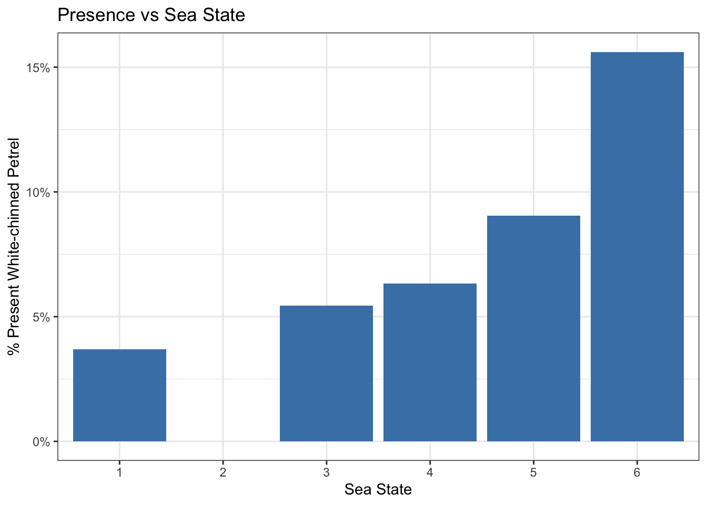
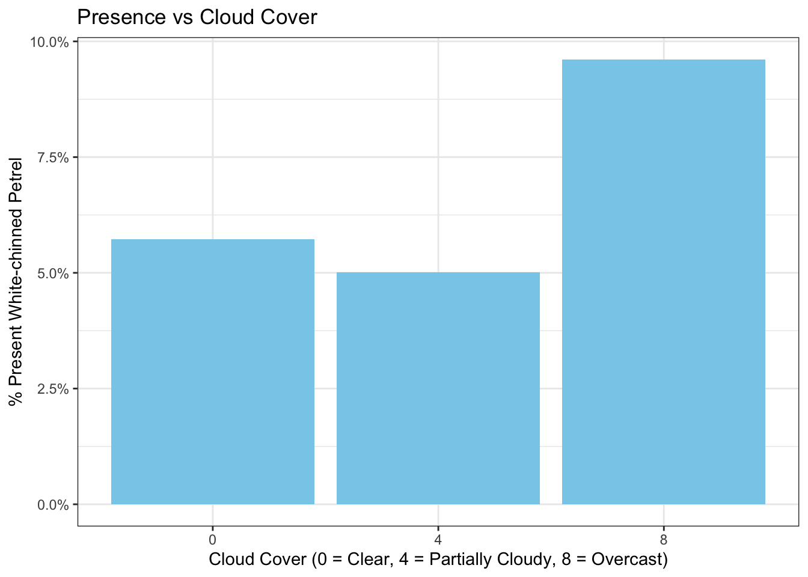
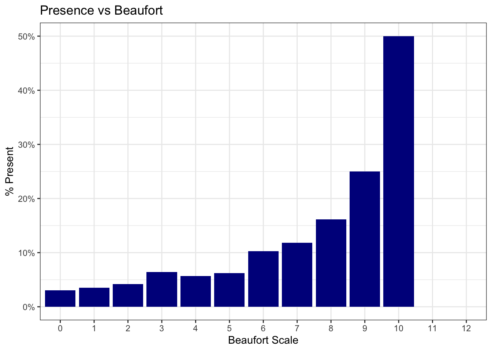
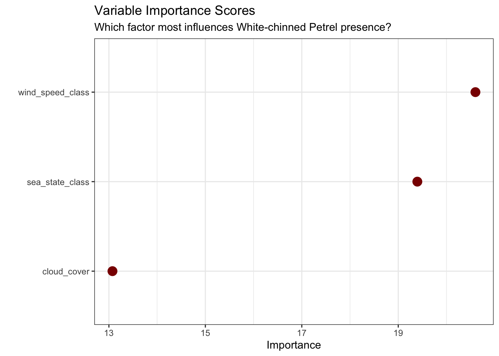

Warning: package 'vip' was built under R version 4.4.3
Attaching package: 'vip'
The following object is masked from 'package:utils':
vi
library(janitor)
Attaching package: 'janitor'
The following objects are masked from 'package:stats':
chisq.test, fisher.test
library(scales)library(knitr)
Warning: package 'knitr' was built under R version 4.4.3
library(yardstick)#Load data (using direct CSV from github)birds <-read_csv('https://raw.githubusercontent.com/rfordatascience/tidytuesday/main/data/2026/2026-04-14/birds.csv')
Warning: One or more parsing issues, call `problems()` on your data frame for details,
e.g.:
dat <- vroom(...)
problems(dat)
Rows: 49019 Columns: 26
── Column specification ────────────────────────────────────────────────────────
Delimiter: ","
chr (6): species_common_name, species_scientific_name, species_abbreviation...
dbl (9): bird_observation_id, record_id, count, n_feeding, n_sitting_on_wat...
lgl (11): sex, feeding, sitting_on_water, sitting_on_ice, sitting_on_ship, i...
ℹ Use `spec()` to retrieve the full column specification for this data.
ℹ Specify the column types or set `show_col_types = FALSE` to quiet this message.
Rows: 12310 Columns: 21
── Column specification ────────────────────────────────────────────────────────
Delimiter: ","
chr (7): hemisphere, activity, cloud_cover, precipitation, observer, censu...
dbl (12): record_id, latitude, longitude, speed, direction, wind_speed_clas...
date (1): date
time (1): time
ℹ Use `spec()` to retrieve the full column specification for this data.
ℹ Specify the column types or set `show_col_types = FALSE` to quiet this message.
#Add optional setting preferences and set the seedtheme_set(theme_bw())options(yardstick.event_first =TRUE)set.seed(123)
Outcome creation: what are we trying to investigate with this data?
After perusing the data, we can see that this is a compilation of four datasets for this week’s TidyTuesday: ships, birds, sea_states and beaufort_scale. “Ships” compiles all of the weather and logistical observations from the ship that for a particular observation period, including date, time, location, and weather-related patterns. “Birds” compiles all of the different bird species spotted during the same observation periods as the “Ships” dataset. The final two datasets, sea_states and beaufort_scale, provide data that explains the numerical classifications using these scales: sea_states provides descriptions of the wave conditions and beaufort_scale provides descriptions of the wind conditions. Taking all of this in, I felt an appropriate question to ask would investigate how three different weather patterns could affect the spotting of the White-chinned Petrel.
Question: How do weather-related conditions, including wind speed, cloud coverage, and water conditions affect the presence of the White-chinned petrel?
Hypothesis: White-chinned petrels are frequent divers in the ocean, using this technique to dive for food. I hypothesize that strong weathers patterns, including high wind speeds, choppy waters and increased cloud coverage, would increase presence, as the petrel might sense a storm approaching and opt to hunt for food now rather than later, increasing divings and ultimately spottings.
#Create the outcome we are looking to predict, which is how presence of the White-chinned petrel is affected by three different factors: wind speed (Beaufort scale), sea state and cloud coverwc_petrel_data <- birds |>left_join(ships, by ="record_id") |>#Joins ships and birds by record_ID, which they both sharemutate(is_wc_petrel = species_scientific_name =="Procellaria aequinoctialis") |>#Creates a column which confirms if a observation is a white-chinned petrelgroup_by(record_id) |>summarise(present =any(is_wc_petrel, na.rm =TRUE),wind_speed_class =first(wind_speed_class),sea_state_class =first(sea_state_class),cloud_cover_raw =first(cloud_cover),.groups ="drop" ) |>#Summarizes the data, and specifically provides a count of presence in the mutated is_wc_petrel columnmutate(#Map the text categories to a numeric scale, which follows the set categories defined online for the cloud cover range (0 = clear, 4 = partially cloudy, 8 = overcast)cloud_cover =case_when( cloud_cover_raw =="clear"~0, cloud_cover_raw =="partially cloudy"~4, cloud_cover_raw =="overcast"~8,TRUE~NA_real_ ),wind_speed_class =as.numeric(wind_speed_class), #Converts wind_speed to numericsea_state_class =as.numeric(sea_state_class) #Converts sea state class to numeric ) |>#Filter to remove NAsfilter(!is.na(wind_speed_class), !is.na(sea_state_class), !is.na(cloud_cover)) |>mutate(present =factor(if_else(present, "present", "absent"), levels =c("absent", "present")) )
#Graph 1: Plot the Percent of White-chinned Petrels present by sea statep1 <- wc_petrel_data |>group_by(sea_state_class) |>summarise(prop =mean(present =="present")) |>ggplot(aes(x =factor(sea_state_class), y = prop)) +geom_col(fill ="steelblue") +scale_y_continuous(labels =percent_format()) +labs(title ="Presence vs Sea State", x ="Sea State", y ="% Present White-chinned Petrel")p1

We see that there appears to be a positive correlation between sea state and percent presence of White-chinned petrels, with a higher percent seen in rougher recorded water states (sea states 5 and 6).
#Graph 2: Plot the Percent of Present White-chinned Petrels present by cloud conditionsp2 <- wc_petrel_data |>group_by(cloud_cover) |>summarise(prop =mean(present =="present")) |>ggplot(aes(x =factor(cloud_cover), y = prop)) +geom_col(fill ="skyblue") +scale_y_continuous(labels =percent_format()) +labs(title ="Presence vs Cloud Cover", x ="Cloud Cover (0 = Clear, 4 = Partially Cloudy, 8 = Overcast)", y ="% Present White-chinned Petrel")p2

We see that there does not appear to be any obvious trends between cloud cover and White-chinned Petrel presence.
#Graph 3: Plot the Percent of Present White-chinned Petrels present by beaufort scaled wind speedsp3 <- wc_petrel_data |>group_by(wind_speed_class) |>summarise(prop =mean(present =="present")) |>ggplot(aes(x =factor(wind_speed_class), y = prop)) +geom_col(fill ="darkblue") +scale_y_continuous(labels =percent_format()) +labs(title ="Presence vs Beaufort", x ="Beaufort Scale", y ="% Present")p3

We see that there does appear to be a positive trend between Beaufort recordings and percent of present White-chinned Petrels, with higher Beaufort scale recordings (which translated to faster recorded wind speeds) associating with a higher percent presence of White-chinned Petrels.
Modeling: Run Linear and Random Forest
#Split the data into training data and testing datadata_split <-initial_split(wc_petrel_data, prop =0.75, strata = present)train_data <-training(data_split)test_data <-testing(data_split)#Creat a recipe with downsampling to balance the 'absent' and 'present' classeswc_recipe <-recipe(present ~ sea_state_class + cloud_cover + wind_speed_class, data = train_data) |>step_downsample(present)#Generate Linear Model##Create Linear Modellinear_model <-logistic_reg() %>%set_engine("glm") %>%set_mode("classification")##Create workflow for linear model incorporating the previously created recipelinear_workflow <-workflow() %>%add_model(linear_model) %>%add_recipe(wc_recipe)##Fit the linear model to the data to make predictionslinear_fit <-fit(linear_workflow, data = train_data)#Run Linear and Random Forest modeling#Random Forest Modelrf_spec <-rand_forest(trees =500) |>set_mode("classification") |>set_engine("ranger", importance ="impurity")#Fit the final model workflowforest_workflow <-workflow() |>add_recipe(wc_recipe) |>add_model(rf_spec)forest_fit <- forest_workflow |>last_fit(data_split)#Collect performance metrics on test data for random forestcollect_metrics(forest_fit) |>kable(caption ="Final Test Set Performance")
Final Test Set Performance
.metric
.estimator
.estimate
.config
accuracy
binary
0.6295309
pre0_mod0_post0
roc_auc
binary
0.6848027
pre0_mod0_post0
brier_class
binary
0.2419287
pre0_mod0_post0
#Evaluate the modelevaluate_model <-function(fit, data, name) { preds <-predict(fit, data, type ="prob") %>%bind_cols(predict(fit, data)) %>%bind_cols(data)print(paste(name, "Accuracy:"))print(accuracy(preds, truth = present, estimate = .pred_class))print(paste(name, "ROC AUC:"))print(roc_auc(preds, truth = present, .pred_present, event_level ="second"))}evaluate_model(linear_fit, test_data, "Logistic Model")
Warning: The global option `yardstick.event_first` was deprecated in yardstick 0.0.7.
ℹ Please use the metric function argument `event_level` instead.
ℹ The global option is being ignored entirely.
ℹ The deprecated feature was likely used in the yardstick package.
Please report the issue at <https://github.com/tidymodels/yardstick/issues>.
Warning: Using `size` aesthetic for lines was deprecated in ggplot2 3.4.0.
ℹ Please use `linewidth` instead.
#Create a plot which looks at the variable importance score, which scores the impact of each variable in the random forest modelforest_fit$.workflow[[1]] |>extract_fit_parsnip() |>vip(geom ="point", aesthetics =list(size =4, color ="darkred")) +labs(title ="Variable Importance Scores",subtitle ="Which factor most influences White-chinned Petrel presence?")

#Compare solo-factor performance via Cross-Validationcv_folds <-vfold_cv(train_data, v =5, strata = present)#Create recipes for individual factorsrec_wind <-recipe(present ~ wind_speed_class, data = train_data) |>step_downsample(present)rec_sea <-recipe(present ~ sea_state_class, data = train_data) |>step_downsample(present)rec_cloud <-recipe(present ~ cloud_cover, data = train_data) |>step_downsample(present)#Create a workflow that will run models using the individual recipes aboveindividual_results <-workflow_set(preproc =list(wind = rec_wind, sea = rec_sea, cloud = rec_cloud),models =list(rf = rf_spec)) |>workflow_map("fit_resamples", resamples = cv_folds, metrics =metric_set(accuracy, roc_auc))#Collect metrics for accuracy and ROC AUCcollect_metrics(individual_results) |>select(wflow_id, .metric, mean) |>pivot_wider(names_from = .metric, values_from = mean) |>arrange(desc(roc_auc)) |>kable(caption ="Individual Factor Performance")
Individual Factor Performance
wflow_id
accuracy
roc_auc
wind_rf
0.5929421
0.5955917
cloud_rf
0.7118742
0.5800171
sea_rf
0.6816362
0.5421393
Conclusions and Interpretations
For this modeling approach, I used two different metrics: accuracy and ROC AUC. Both metrics are appropriate to evaluate binary outcomes, such as presence/absence. Accuracy is the percentage of correct outcomes predicted by the model, whereas the ROC AUC indicates whether the model is able to predict positive outcomes (presence) better than negative outcomes (absence) An accuracy or ROC AUC of 0.5 means that the model has no predictive power and is no better than random guessing. Any value above 0.5 indicates predictive power of the model. The logistical regression model used generated an accuracy of 0.538 ROC AUC value of 0.624. This indicates that the logistical regression model has an accuracy no better than randomly guessing presences versus absences, but does have some predictive power in predicting the true positive presences. The Random Forest model, however, had an accuracy of 0.63 and a ROC AUC of 0.685. Both metrics were better than the logistical regression, indicating that although it is still only a somewhat strong preditice power, the three predictor variables of sea state, beaufort scale and cloud coverage have some predictive power. However, since the accuracy is still quite low, this indicates that there are definitely other variables in the dataset, likely other weather-related variables such as barometric pressure and rain pattern, that could further improve the accuracy of predicting White-chinned Petrel presence. Looking at the Variable Importance Score, which indicates how critical that variable is to the predictive power of the model on an individual basis, we can see that it appears as though the beaufort scale/wind-speed drove the majority of the predictive power. However, interesingly enough, when running the individual factor performances, it looks as though wind-speed and cloud coverage acted the best (accuracy = 0.634 and 0.646 respectively), with sea state having an accuracy closer to 0.5 (0.562).